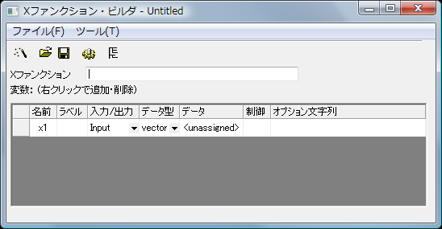
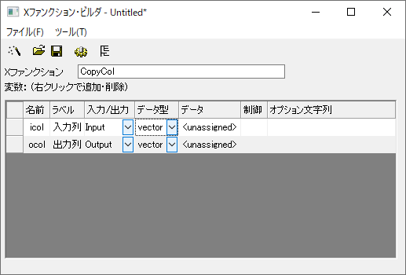
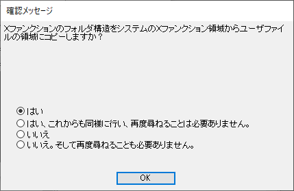
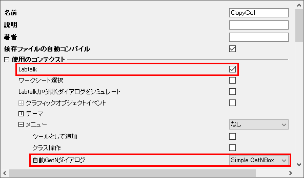

単純なXファンクションの作成
X-Function BuilderXファンクションはXファンクション・ビルダで作成されます。Xファンクションビルダはツール：Xファンクション・ビルダを選択すると開きます。
Xファンクションビルダダイアログは下図の通りです。

X-Function, CreateXファンクションの作成
以下のステップはXファンクションの作成手順を示します。今回の例では、1つの列のデータを他の列にコピーするタスクを担うXファンクションを作成します。
- ツール：Xファンクション・ビルダを選択するしてビルダを開きます。
- XファンクションボックスにXファンクションの名前として「CopyCol」と入力します。
- Xファンクションの各変数とパラメータは、それぞれ行が必要です。テーブルの下にある灰色の領域を右クリックし、変数の追加を選択して、さらに行を追加します。
- このXファンクションには、入力列と出力列を指定するための2変数が必要です。下の画像のように記入してください。ほとんどの列は一目瞭然です。
- データ列は、デフォルト値を設定するためのものです。<active>は現在選択されている列を意味し、 <new>は 新しい列を意味します。図のように設定されている場合、CopyColを呼び出すとデフォルトで現在選択されている列を新しい列にコピーします。
- 
 ボタンをクリックしてXファンクションを保存します。Xファンクションを初めて作成すると、システムのXファンクション領域からユーザーファイルフォルダにXファンクションフォルダ構造全体をコピーするように指示するメッセージが表示されます。2番目のラジオボタンを選択して、再度ポップアップしないようにします。
ボタンをクリックしてXファンクションを保存します。Xファンクションを初めて作成すると、システムのXファンクション領域からユーザーファイルフォルダにXファンクションフォルダ構造全体をコピーするように指示するメッセージが表示されます。2番目のラジオボタンを選択して、再度ポップアップしないようにします。- 
- 名前を付けて保存ダイアログが表示されたら、Xファクションに移動して、Xファンクションフォルダ構造全体を確認します。適切なフォルダを選択します。例: CopyCol Xファンクションは、ワークシートの列をコピーするためのものです。そのため、データ操作> ワークシートフォルダの順に選択して、ファイルを保存します。通常、ファイル名はXファンクション名と同じにします。保存ボタンをクリックします。
 ボタンをクリックするとツリービューに切り替えます。X-Function, Control Labtalk AccessingスクリプトウィンドウおよびコマンドウィンドウでXファンクションを使用できるように、LabTalkチェックボックスがオンになっていることを確認します。
ボタンをクリックするとツリービューに切り替えます。X-Function, Control Labtalk AccessingスクリプトウィンドウおよびコマンドウィンドウでXファンクションを使用できるように、LabTalkチェックボックスがオンになっていることを確認します。- 自動GetNダイアログを単純なGetNBoxに設定します。自動GetNダイアログは、Xファンクションをダイアログ付きまたはダイアログなしで使用するか、また、ダイアログの種類を選択できます。保存ボタンを再度クリックして変更を保存します。

- 次に、作成したXファンクションの作業を行うOrigin Cコードを書きます。コードビルダボタン
 をクリックします。 これにより、Xファンクションをコードビルダで開き、Origin Cコードを記述できます。main関数に、次のOrigin Cコードを追加します。
をクリックします。 これにより、Xファンクションをコードビルダで開き、Origin Cコードを記述できます。main関数に、次のOrigin Cコードを追加します。
ocol = icol;
- コンパイルボタンをクリックし、ダイアログに戻るボタンをクリックして、Xファンクションビルダに戻ります。 もう一度 ボタンをクリックします。
- Xファンクションビルダツールを閉じます。
- ツールを再度開き、開くボタンを選択することで、作成したXファンクションをロードして追加の編集が可能です。
X-Function, ExecutionXファンクションを使用
これで、Xファンクションの作成が成功したので、テストしてみます。
- 2つの列がある、新しいワークシートを作成します。 列Aと列Bに乱数を入力します。
- 列A(X)ヘッダをクリックして、列Aを強調表示します。
- スクリプトウィンドウまたはコマンドウィンドウで、Xファンクション名CopyColを変数なしで入力し、Enterキーを押してデフォルト設定で実行します。
- 新しい列を作成し、列Aのデータをコピーします。
- 列Bを選択します。
- スクリプトウィンドウで、CopyCol -dと入力し、Enterキーを押してXファンクションのダイアログを開きます。
- これにより、Xファンクション作成時に指定した単純なGetNダイアログが開きます。入力と出力はデフォルト設定でロードされます。OKボタンをクリックします。
- 列Bの値がコピーされた新しい列が作成されます。
Xファンクションの詳細とその呼び出し方法については、Xファンクションを参照してください 。